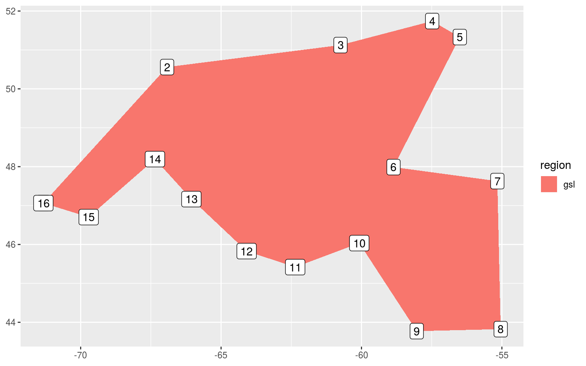

Polygon preparation
Robert Schlegel
2019-05-23
Last updated: 2019-05-28
workflowr checks: (Click a bullet for more information)-
✔ R Markdown file: up-to-date
Great! Since the R Markdown file has been committed to the Git repository, you know the exact version of the code that produced these results.
-
✔ Environment: empty
Great job! The global environment was empty. Objects defined in the global environment can affect the analysis in your R Markdown file in unknown ways. For reproduciblity it’s best to always run the code in an empty environment.
-
✔ Seed:
set.seed(20190513)The command
set.seed(20190513)was run prior to running the code in the R Markdown file. Setting a seed ensures that any results that rely on randomness, e.g. subsampling or permutations, are reproducible. -
✔ Session information: recorded
Great job! Recording the operating system, R version, and package versions is critical for reproducibility.
-
Great! You are using Git for version control. Tracking code development and connecting the code version to the results is critical for reproducibility. The version displayed above was the version of the Git repository at the time these results were generated.✔ Repository version: 3cdb0aa
Note that you need to be careful to ensure that all relevant files for the analysis have been committed to Git prior to generating the results (you can usewflow_publishorwflow_git_commit). workflowr only checks the R Markdown file, but you know if there are other scripts or data files that it depends on. Below is the status of the Git repository when the results were generated:
Note that any generated files, e.g. HTML, png, CSS, etc., are not included in this status report because it is ok for generated content to have uncommitted changes.Ignored files: Ignored: .Rhistory Ignored: .Rproj.user/ Ignored: analysis/figure/ Untracked files: Untracked: data/NAPA_files_dates.Rda Unstaged changes: Modified: analysis/var-prep.Rmd Modified: data/NWA_corners.Rda Modified: output/NWA_coords_cabot_plot.pdf Modified: output/NWA_coords_plot.pdf
Expand here to see past versions:
| File | Version | Author | Date | Message |
|---|---|---|---|---|
| Rmd | 3cdb0aa | robwschlegel | 2019-05-28 | Extended the corners of the study region. |
| html | def6979 | robwschlegel | 2019-05-24 | Build site. |
| Rmd | 4144097 | robwschlegel | 2019-05-24 | Minor edit to polygon prep vignette. |
| html | c09b4f7 | robwschlegel | 2019-05-24 | Build site. |
| Rmd | 5dc8bd9 | robwschlegel | 2019-05-24 | Finished initial creation of SST prep vignette. |
| Rmd | 5c2b406 | robwschlegel | 2019-05-23 | Commit before changes |
| html | d544295 | robwschlegel | 2019-05-23 | Build site. |
| Rmd | 9cb3efa | robwschlegel | 2019-05-23 | Updating work done on the polygon prep vignette. |
| Rmd | d8f2b99 | robwschlegel | 2019-05-23 | Working on polygon vignette |
Introduction
This markdown file contains all of the code used to prepare the polygons that are used to define the different regions in the Northwest Atlantic. These different regions will then have their SST pixels spatially averaged to create a single time series per region. This is done so that the MHW detection algorithm may then be run on these individual time series to represent a general representation of the SST in those regions, rather than running the algorithm on each pixel individually, which would introduce a host of problems.
# Packages used in this vignette
library(tidyverse) # Base suite of functions
library(R.matlab) # For dealing with MATLAB files
library(marmap) # For bathymetry
library(maptools) # Contour tools
library(rgeos) # For intersectionsCoastal region polygons
The first step in this analysis is to broadly define the coastal regions based on previous research into thermally relevant boundaries. We have chosen to use a paper by Richaud et al 2016 to do this (https://www.sciencedirect.com/science/article/pii/S0278434316303181#f0010). Being the kind-hearted man that he is, Benjamin forwarded us the polygons (Richaud et al. 2016; Figure 2) from this work as a MATLAB file so we must first open that up and convert it to an R format for further use.
# Load the file
NWA_polygons <- R.matlab::readMat("data/boundaries.mat")
# Remove index list items and attributes
NWA_polygons[grepl("[.]",names(NWA_polygons))] <- NULL
# attributes(NWA_polygons) <- NULL
# Function for neatly converting list items into a dataframe
# vec <- NWA_polygons[1]
mat_col <- function(vec){
df <- as.data.frame(vec)
df$region <- substr(colnames(df)[1], 2, nchar(colnames(df)[1]))
colnames(df)[1] <- strtrim(colnames(df)[1], 1)
df <- df[c(2,1)]
return(df)
}
# Create multiple smaller data.frames
coords_1 <- cbind(mat_col(NWA_polygons[1]), mat_col(NWA_polygons[2])[2])
coords_2 <- cbind(mat_col(NWA_polygons[3]), mat_col(NWA_polygons[4])[2])
coords_3 <- cbind(mat_col(NWA_polygons[5]), mat_col(NWA_polygons[6])[2])
coords_4 <- cbind(mat_col(NWA_polygons[7]), mat_col(NWA_polygons[8])[2])
coords_5 <- cbind(mat_col(NWA_polygons[9]), mat_col(NWA_polygons[10])[2])
coords_6 <- cbind(mat_col(NWA_polygons[11]), mat_col(NWA_polygons[12])[2])
# Combine them into one full dataframe and save
NWA_coords <- rbind(coords_1, coords_2, coords_3, coords_4, coords_5, coords_6)
colnames(NWA_coords) <- c("region", "lon", "lat")
# saveRDS(NWA_coords, "data/NWA_coords.Rda")With our polygons now switched over from MATLAB to R we now want to visualise them to ensure that everything has gone smoothly.
# Load polygon coordinates
NWA_coords <- readRDS("data/NWA_coords.Rda")
# The base map
map_base <- ggplot2::fortify(maps::map(fill = TRUE, col = "grey80", plot = FALSE)) %>%
dplyr::rename(lon = long) %>%
mutate(group = ifelse(lon > 180, group+9999, group),
lon = ifelse(lon > 180, lon-360, lon)) %>%
select(-region, -subregion)
# Quick map
NWA_coords_plot <- ggplot(data = NWA_coords, aes(x = lon, y = lat)) +
geom_polygon(data = map_base, aes(group = group), show.legend = F) +
geom_polygon(aes(colour = region, fill = region), size = 1.5, alpha = 0.2) +
coord_cartesian(xlim = c(min(NWA_coords$lon)-10, max(NWA_coords$lon)+10),
ylim = c(min(NWA_coords$lat)-10, max(NWA_coords$lat)+10)) +
labs(x = NULL, y = NULL, colour = "Region", fill = "Region") +
theme(legend.position = "bottom")
# ggsave(NWA_coords_plot, filename = "output/NWA_coords_plot.pdf", height = 5, width = 6)
# Visualise
NWA_coords_plot
Expand here to see past versions of poly-vis-1.png:
| Version | Author | Date |
|---|---|---|
| c09b4f7 | robwschlegel | 2019-05-24 |
| d544295 | robwschlegel | 2019-05-23 |
The region abbreviations are: “gm” for Gulf of Maine, “gls” for Gulf of St. Lawrence, “ls” for Labrador Shelf, “mab” for Mid-Atlantic Bight, “nfs” for Newfoundland Shelf and “ss” for Scotian Shelf.
Before we move on, we’ll do a bit of house keeping to establish a consistent study area for this project based on our polygons. We’ll simply extend the study area by 10 degrees of longitude and latitude from the furthest edges of the polygons, as seen in the figure above. This will encompass broad synoptic scale variables that may be driving MHWs in our study regions, but should not be so broad as to begin to account for teleconnections, which are currently beyond the scope of this project.
# Set the max/min lon/at values
lon_min <- round(min(NWA_coords$lon)-10, 2)
lon_max <- round(max(NWA_coords$lon)+10, 2)
lat_min <- round(min(NWA_coords$lat)-10, 2)
lat_max <- round(max(NWA_coords$lat)+10, 2)
# Combine and save
NWA_corners <- c(lon_min, lon_max, lat_min, lat_max)
# saveRDS(NWA_corners, file = "data/NWA_corners.Rda")Cabot Strait
It was decided that because we are interested in the geography of the regions, and not just their temperature regimes, the Cabot Strait needed to be defined apart from the Gulf of St. Lawrence region. To do this we will simply snip the “gsl” polygon into two pieces at its narrowest point.
# Extract the gsl region only
gsl_sub <- NWA_coords[NWA_coords$region == "gsl",]
# Add a simple integer column for ease of plotting
gsl_sub$row_count <- 1:nrow(gsl_sub)
ggplot(data = gsl_sub, aes(x = lon, y = lat)) +
geom_polygon(aes(fill = region)) +
geom_label(aes(label = row_count)) +
labs(x = NULL, y = NULL)
Expand here to see past versions of cabot-strait-1-1.png:
| Version | Author | Date |
|---|---|---|
| c09b4f7 | robwschlegel | 2019-05-24 |
| d544295 | robwschlegel | 2019-05-23 |
It appears from the crude figure above that we should pinch the polygon off into two separate shapes at row 6 and 10.
# Load the corners of the study area
NWA_corners <- readRDS("data/NWA_corners.Rda")
# Create smaller gsl polygon
gsl_new <- NWA_coords[NWA_coords$region == "gsl",] %>%
slice(-c(7:9))
# Create new cbs (Cabot Strait) polygon
cbs <- NWA_coords[NWA_coords$region == "gsl",] %>%
slice(6:10) %>%
mutate(region = "cbs")
# Attach the new polygons to the original polygons
NWA_coords_cabot <- NWA_coords %>%
filter(region != "gsl") %>%
rbind(., gsl_new, cbs)
# saveRDS(NWA_coords_cabot, "data/NWA_coords_cabot.Rda")
# Plot the new areas to ensure everything worked
NWA_coords_cabot_plot <- ggplot(data = NWA_coords_cabot, aes(x = lon, y = lat)) +
geom_polygon(data = map_base, aes(group = group), show.legend = F) +
geom_polygon(aes(colour = region, fill = region), size = 1.5, alpha = 0.2) +
coord_cartesian(xlim = NWA_corners[1:2],
ylim = NWA_corners[3:4]) +
labs(x = NULL, y = NULL, colour = "Region", fill = "Region") +
theme(legend.position = "bottom")
# ggsave(NWA_coords_cabot_plot, filename = "output/NWA_coords_cabot_plot.pdf", height = 5, width = 6)
# Visualise
NWA_coords_cabot_plotExpand here to see past versions of cabot-strait-2-1.png:
| Version | Author | Date |
|---|---|---|
| c09b4f7 | robwschlegel | 2019-05-24 |
| d544295 | robwschlegel | 2019-05-23 |
Everything is looking good, but we may want to divide the Gulf of Maine (gm) into two polygons as well. This would make the Bay of Fundy in it’s own region. For now however we will move on to the next step, which is dividing the current polygons by bathymetry.
Bathymetry polygons
These regions are an excellent start, but because the aim of this research project is to determine the primary drivers of MHWs in the Northwest Atlantic we want to subset the regions not only by their thermal characteristics, but also by their geophysical characteristics, which in this instance is most immediately available as bathymetry. The rationale for this is that surface forcing as a driver of anomalously warm seawater is likely to be more prevalent in shallow waters than in shelf waters or deeper. To this end we will divide the regions into three sub-regions each: 0 – 50 m depth, 51 – 200 m depth, 201+ m depth.
Downloading data
Before we can divide up our polygons by bathymetry, we must first download said bathymetry data. We will use here the NOAA data as it is (to my knowledge) the most convenient bathymetry data available directly through R.
# Donwload NOAA bathy data at highest available resolution
NWA_bathy_hires <- as.xyz(getNOAA.bathy(lon1 = NWA_corners[1]+9, lon2 = NWA_corners[2]-9,
lat1 = NWA_corners[3]+9, lat2 = NWA_corners[4]-9, resolution = 1))
colnames(NWA_bathy_hires) <- c("lon", "lat", "depth")
NWA_bathy_hires <- NWA_bathy_hires %>%
filter(depth <= 0) %>%
mutate(lon = round(lon, 4),
lat = round(lat, 4))
# saveRDS(NWA_bathy_hires, file = "data/NWA_bathy_hires.Rda")
# Donwload NOAA bathy data at a courser resolution
NWA_bathy_lowres <- as.xyz(getNOAA.bathy(lon1 = NWA_corners[1]+9, lon2 = NWA_corners[2]-9,
lat1 = NWA_corners[3]+9, lat2 = NWA_corners[4]-9, resolution = 6))
colnames(NWA_bathy_lowres) <- c("lon", "lat", "depth")
NWA_bathy_lowres <- NWA_bathy_lowres %>%
filter(depth <= 0) %>%
mutate(lon = round(lon, 4),
lat = round(lat, 4))
# saveRDS(NWA_bathy_lowres, file = "data/NWA_bathy_lowres.Rda")With our high res bathymetry data downloaded we will now go about finding the 50 and 200 metre isobaths. These lines will be used to define the edges of our sub-regions. The naming conventions we will use will be
# Load hires bathymetry data
NWA_bathy_hires <- readRDS("data/NWA_bathy_hires.Rda")
# Plot to see what we've got
bathy_hires_plot <- ggplot(NWA_coords_cabot, aes(x = lon, y = lat)) +
geom_polygon(data = map_base, aes(group = group), show.legend = F) +
geom_polygon(aes(group = region, fill = region, colour = region), alpha = 0.2) +
geom_contour(data = NWA_bathy_hires, aes(z = depth),
breaks = c(-50), size = c(0.3), colour = "grey70") +
geom_contour(data = NWA_bathy_hires, aes(z = depth),
breaks = c(-200), size = c(0.3), colour = "grey30") +
coord_cartesian(xlim = NWA_corners[1:2],
ylim = NWA_corners[3:4]) +
labs(x = NULL, y = NULL)
# Visualise
bathy_hires_plot
Expand here to see past versions of isobath-hires-plot-1.png:
| Version | Author | Date |
|---|---|---|
| c09b4f7 | robwschlegel | 2019-05-24 |
| d544295 | robwschlegel | 2019-05-23 |
The resolution on the figure above is fantastic, but perhaps a bit more than what we need as the desire is to create functional polygons for dividing our regions. The level of detail present in the figure above will likely lead to issues later on. Let’s look at the lowres bathymetry data and see if that works better.
# Load hires bathymetry data
NWA_bathy_lowres <- readRDS("data/NWA_bathy_lowres.Rda")
# Plot to see what we've got
bathy_lowres_plot <- ggplot(NWA_coords_cabot, aes(x = lon, y = lat)) +
geom_polygon(data = map_base, aes(group = group), show.legend = F) +
geom_polygon(aes(group = region, fill = region, colour = region), alpha = 0.2) +
geom_contour(data = NWA_bathy_lowres, aes(z = depth),
breaks = c(-50), size = c(0.3), colour = "grey70") +
geom_contour(data = NWA_bathy_lowres, aes(z = depth),
breaks = c(-200), size = c(0.3), colour = "grey30") +
coord_cartesian(xlim = NWA_corners[1:2],
ylim = NWA_corners[3:4]) +
labs(x = NULL, y = NULL)
# Visualise
bathy_lowres_plot
Expand here to see past versions of isobath-lowres-plot-1.png:
| Version | Author | Date |
|---|---|---|
| c09b4f7 | robwschlegel | 2019-05-24 |
| d544295 | robwschlegel | 2019-05-23 |
The above plot shows the NOAA bathymetry data downloaded with a resolution of 6. I tried these data at all resolutions from 2 – 8 and visually this looks to be the best balance between removing unnecessary convolutions without loosing the broader features.
Isobath contour based polygons
With a decent resolution picked out for our bathymetry data we now nee to create polygons from the desired isobaths. These will then be used as custom bounding boxes with which we will filter and combine the SST pixels for the next vignette.
# Spread bathy dataframe to matrix to play nice with shapefiles
NWA_bathy_matrix <- NWA_bathy_lowres %>%
mutate(depth = round(depth, -1)) %>%
reshape2::acast( lon~lat, value.var = "depth")
# Generate contours
cont <- contourLines(x = as.numeric(row.names(NWA_bathy_matrix)), y = as.numeric(colnames(NWA_bathy_matrix)),
z = NWA_bathy_matrix, levels = c(-50, -200))
cont_lines <- ContourLines2SLDF(cont, proj4string = CRS("+proj=longlat +datum=WGS84")) # create SpatialLines DF
# Have a look
plot(cont_lines)
Expand here to see past versions of isobath-1-1.png:
| Version | Author | Date |
|---|---|---|
| d544295 | robwschlegel | 2019-05-23 |
With the isobath contours now convert to a spatial class object we will need to do the same for our study area polygons so they can play nice with one another.
# First convert the dataframe of different areas to a list
poly_list <- split(NWA_coords_cabot, NWA_coords_cabot$region)
# We then only want lon/lat in the list, not the names
poly_list <- lapply(poly_list, function(x) { x["region"] <- NULL; x })
# Convert coords to polygon type
poly_poly <- sapply(poly_list, Polygon)
# Add id variables back in
poly_poly <- lapply(seq_along(poly_poly), function(i) Polygons(list(poly_poly[[i]]),
ID = names(poly_list)[i]))
# Create SpatialPolygons object
spatial_poly <- SpatialPolygons(poly_poly, proj4string = CRS("+proj=longlat +datum=WGS84"))
# Clip the contour lines to the study area polygons
spatial_poly_lines <- gIntersection(cont_lines, spatial_poly) # clip the contours to subarea0
# Visualise
plot(spatial_poly)
lines(spatial_poly_lines)
Expand here to see past versions of isobath-2-1.png:
| Version | Author | Date |
|---|---|---|
| d544295 | robwschlegel | 2019-05-23 |
After going through all of this shape file nonsense it dawned on me that I could much more easily just have used the bathymetry data already present in the NAPA model and then clumped the SST pixels based on which of the depth categories they fall within.
We will now go about creating SST time series for each of the depth sub-regions. This work is continued in the SST preparation vignette.
Session information
sessionInfo()R version 3.6.0 (2019-04-26)
Platform: x86_64-pc-linux-gnu (64-bit)
Running under: Ubuntu 16.04.5 LTS
Matrix products: default
BLAS: /usr/lib/openblas-base/libblas.so.3
LAPACK: /usr/lib/libopenblasp-r0.2.18.so
locale:
[1] LC_CTYPE=en_CA.UTF-8 LC_NUMERIC=C
[3] LC_TIME=en_CA.UTF-8 LC_COLLATE=en_CA.UTF-8
[5] LC_MONETARY=en_CA.UTF-8 LC_MESSAGES=en_CA.UTF-8
[7] LC_PAPER=en_CA.UTF-8 LC_NAME=C
[9] LC_ADDRESS=C LC_TELEPHONE=C
[11] LC_MEASUREMENT=en_CA.UTF-8 LC_IDENTIFICATION=C
attached base packages:
[1] stats graphics grDevices utils datasets methods base
other attached packages:
[1] bindrcpp_0.2.2 rgeos_0.3-28 maptools_0.9-4 sp_1.3-1
[5] marmap_1.0.1 R.matlab_3.6.1 forcats_0.3.0 stringr_1.3.1
[9] dplyr_0.7.6 purrr_0.2.5 readr_1.1.1 tidyr_0.8.1
[13] tibble_1.4.2 ggplot2_3.0.0 tidyverse_1.2.1
loaded via a namespace (and not attached):
[1] Rcpp_0.12.18 lubridate_1.7.4 lattice_0.20-35
[4] assertthat_0.2.0 rprojroot_1.3-2 digest_0.6.16
[7] R6_2.2.2 cellranger_1.1.0 plyr_1.8.4
[10] backports_1.1.2 RSQLite_2.1.1 evaluate_0.11
[13] httr_1.3.1 pillar_1.3.0 rlang_0.2.2
[16] lazyeval_0.2.1 readxl_1.1.0 rstudioapi_0.7
[19] whisker_0.3-2 raster_2.6-7 blob_1.1.1
[22] R.utils_2.7.0 R.oo_1.22.0 rmarkdown_1.10
[25] labeling_0.3 rgdal_1.3-4 foreign_0.8-71
[28] bit_1.1-14 munsell_0.5.0 broom_0.5.0
[31] compiler_3.6.0 modelr_0.1.2 pkgconfig_2.0.2
[34] shape_1.4.4 htmltools_0.3.6 tidyselect_0.2.4
[37] workflowr_1.1.1 crayon_1.3.4 withr_2.1.2
[40] R.methodsS3_1.7.1 grid_3.6.0 nlme_3.1-137
[43] jsonlite_1.5 gtable_0.2.0 DBI_1.0.0
[46] adehabitatMA_0.3.12 git2r_0.23.0 magrittr_1.5
[49] scales_1.0.0 ncdf4_1.16 cli_1.0.0
[52] stringi_1.2.4 reshape2_1.4.3 xml2_1.2.0
[55] tools_3.6.0 bit64_0.9-7 glue_1.3.0
[58] maps_3.3.0 hms_0.4.2 yaml_2.2.0
[61] colorspace_1.3-2 rvest_0.3.2 memoise_1.1.0
[64] knitr_1.20 bindr_0.1.1 haven_1.1.2 This reproducible R Markdown analysis was created with workflowr 1.1.1